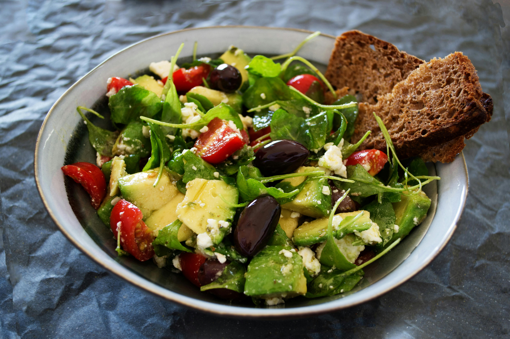
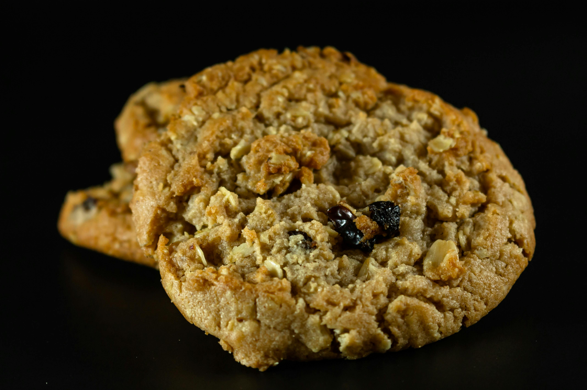

Hi there! my name is Garfield and welcome to my section about me!
Here, you can learn all about me! I know, big fat hairy deal
Who am I?
If you have been living under a rock, or been living like Odie, you
might not know who I am, so let me introduce myself. My name is
Garfield, I am a fat, lazy, lasagna-loving cat born on June 19, 1978 in
an Italian resturant.
Currently, I live with my owner Jon Arbuckle and his dog Odie.
I love Mondays, heck with it, I HATE MONDAYS!!! THEY
SUCK! Well as I was saying, I also love lasagna sleeping.It is
obvious for me. I also have a teddy bear named Pooky, who is the only
one who understands me.
Well case Closed and I will continue on about me.
Below is a youtube video about the evolution of me and the comic!
My favourite and least favourite foods:
The following below are pictures of my favourite and least favourite foods are
My favourite foods (you can tell what it is by the appearance)


My least favourite foods (again, you can tell what it is by the appearance)
 